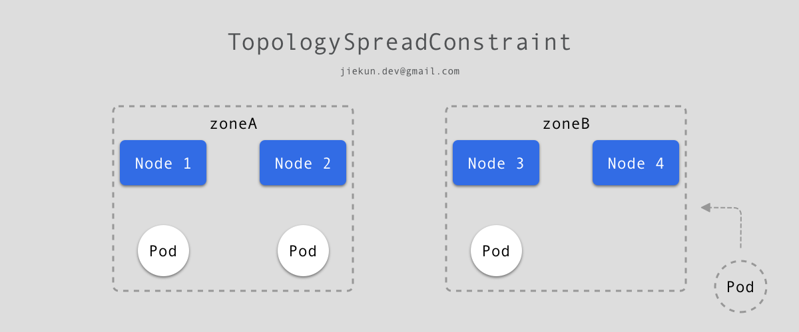
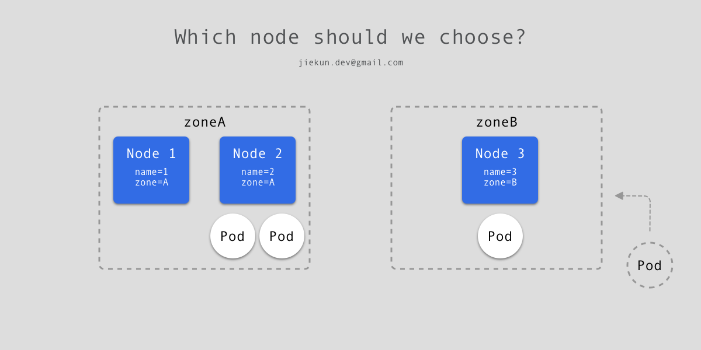

Learn from issues: PodTopologySpread Skew 与 nodeAffinity 过滤
『Learn from issues』 系列通过讲解 Kubernetes 的 Issue 及 PR 中涉及的概念、代码，来帮助 Kubernetes 新人快速了解功能和代码思路。在以往的学习中，阅读大型项目的代码往往比较困难，而且如果没有使用场景，一些功能对新手而言或许会比较模糊且无法复现。本系列挑选的 Issue/PR 通常是只针对特定功能、bug 的改动，并且提供足够精简清晰的上下文来降低理解的负担。文末会附上对应的 Issue/PR 链接方便查看原内容。
功能简介
Kubernetes Scheduler 的任务是将未被调度的 Pod 调度至特定 Node 上。自 v1.19 版本开始，我们可以使用 Pod Topology Spread Constraints 来控制 Pod 在一定拓扑结构集群的调度。
我们假定有 4 个带有 Labels 的 Node：
NAME STATUS ROLES AGE VERSION LABELS
node1 Ready <none> 4m26s v1.16.0 node=node1,zone=zoneA
node2 Ready <none> 3m58s v1.16.0 node=node2,zone=zoneA
node3 Ready <none> 3m17s v1.16.0 node=node3,zone=zoneB
node4 Ready <none> 2m43s v1.16.0 node=node4,zone=zoneB
编写以下 yaml 文件使用 Pod Topology Spread Constraints：
kind: Pod
apiVersion: v1
metadata:
name: mypod
labels:
foo: bar
spec:
topologySpreadConstraints:
- maxSkew: 1 # 最大不均匀度
topologyKey: zone # Node 拓扑结构的 Label
whenUnsatisfiable: DoNotSchedule # 不满足条件时的策略
labelSelector: # 针对带有哪些 Label 的 Pods 生效
matchLabels:
foo: bar
containers:
- name: pause
image: k8s.gcr.io/pause:3.1
简单来说，pod.spec.topologySpreadConstraints 要求满足条件的 Pod 在集群中分布的不均匀度不超过 1，统计的以 Node 中 的 zone 字段聚合。以前文的 4 Nodes 集群为例，zone 只有两个值：zoneA 和 zoneB，如果当前已有 3 个 Pod 如下图分布，那么当前的不均匀度为 2 - 1 = 1。新 Pod 想要加入进来，如果加入至 zoneA，则不均匀度变为 3 - 1 = 2，超出了设定值，因此只能被调度至 zoneB 的 Node 上。至于最终调度至 Node 3 或是 Node 4 均符合预期结果。

不同的 pod.spec.topologySpreadConstraints 条件为 && 关系，需要同时满足。因此，如果期望 Pod 被调度到 Node 4，可以通过增加以下配置，以 node 作为统计字段：
...
spec:
topologySpreadConstraints:
- maxSkew: 1
topologyKey: zone
...
- maxSkew: 1
topologyKey: node
whenUnsatisfiable: DoNotSchedule
labelSelector:
matchLabels:
foo: bar
...
更多示例可以参考官方文档。
除了 Pod Topology Spread Constraints，Node affinity 也可以用来控制调度，本文只介绍涉及的配置以减少需要理解的内容。以下面 yaml 为例，要求 Pod 必须调度至带有 kubernetes.io/e2e-az-name 标签且标签值为 e2e-az1 或 e2e-az2 的 Nodes 上：
apiVersion: v1
kind: Pod
metadata:
name: with-node-affinity
spec:
affinity:
nodeAffinity:
requiredDuringSchedulingIgnoredDuringExecution: # 硬性要求, 必须满足
nodeSelectorTerms:
- matchExpressions:
- key: kubernetes.io/e2e-az-name # 必须调度至带有此标签的 Nodes
operator: In # 标签的值落在以下范围内
values:
- e2e-az1
- e2e-az2
containers:
- name: with-node-affinity
image: k8s.gcr.io/pause:2.0
问题描述
当同时使用 Pod Topology Spread Constraints 和 Node affinity 来控制调度时，我们考虑以下例子，当前集群一共有 3 个 Nodes，其中 Node 1 和 Node 2 属于 zoneA，Node 3 属于 zoneB。已有 2 个 Pod 落在 Node 2 上，1 个 Pod 落在 Node 3。

现在如下文 yaml 新建一个 deployment，要求不同 zone 之间不均匀度不超过 1，且 Pod 不落入带有 name=2 标签的 Nodes。如果调度至 Node 3，那么不同 zone 之间的不均匀度为 2 - 2 = 0，并且也没调度至带有 name=2 标签的 Node，看起来很合理不是吗？
...
spec:
topologySpreadConstraints:
- maxSkew: 1
topologyKey: zone
whenUnsatisfiable: DoNotSchedule
labelSelector:
matchLabels:
app: pause
affinity:
nodeAffinity:
requiredDuringSchedulingIgnoredDuringExecution:
nodeSelectorTerms:
- matchExpressions:
- key: name
operator: NotIn
values: ["2"]
...
但是如果先考虑 nodeAffinity，Pod 永远不能调度至 name=2 标签的 Node，实际上，在 zoneA 中用于计算不均匀度的 Pod 数量应该为 0（仅有 Node 1 拥有的 Pod 才应被计算），而 zoneB 中的 Pod 为 1，如果继续调度至 zoneB，则不均匀度应为 2 - 0 = 2，不符合要求。
因此，这里的问题是在计算不均匀度时，应该先排除被 nodeAffinity 所过滤的 Node。
代码修复
知道问题之后修复就比较容易，对应代码为以下方法：
func (pl *PodTopologySpread) calPreFilterState(pod *v1.Pod) (*preFilterState, error) {
allNodes, err := pl.sharedLister.NodeInfos().List() // 获取到所有节点
...
requiredSchedulingTerm := nodeaffinity.GetRequiredNodeAffinity(pod)
for _, n := range allNodes {
node := n.Node()
match, _ := requiredSchedulingTerm.Match(node) // 是否匹配 nodeAffinity 要求
if !match {
continue
}
if !nodeLabelsMatchSpreadConstraints(node.Labels, constraints) { // 是否匹配 Spread Constraints 要求
continue
}
for _, c := range constraints {
pair := topologyPair{key: c.TopologyKey, value: node.Labels[c.TopologyKey]}
s.TpPairToMatchNum[pair] = new(int32) // 全都满足后记录在 map 中
}
}
processNode := func(i int) {
nodeInfo := allNodes[i] // 此处用了 allNodes, 即包括不满足 nodeAffinity 要求的 Nodes
node := nodeInfo.Node()
for _, constraint := range constraints {
// 计算 Spread Constraints 分组的 Pod 数量
}
}
pl.parallelizer.Until(context.Background(), len(allNodes), processNode)
// 最后得出满足不同 Topology 要求的方案
...
}
显然由于在计算 Spread Constraints 分组时使用了 allNodes[i]，因此被 nodeAffinity 过滤的 Nodes 也被计算入内。所以只需要构造一个新的切片，记录被过滤后得到的节点 filteredNodes[i]，并在后续的处理中以此为统计目标：
func (pl *PodTopologySpread) calPreFilterState(pod *v1.Pod) (*preFilterState, error) {
allNodes, err := pl.sharedLister.NodeInfos().List()
...
var filteredNodes []*framework.NodeInfo // 构造新切片
requiredSchedulingTerm := nodeaffinity.GetRequiredNodeAffinity(pod)
for _, n := range allNodes {
node := n.Node()
match, _ := requiredSchedulingTerm.Match(node)
if !match {
continue
}
if !nodeLabelsMatchSpreadConstraints(node.Labels, constraints) {
continue
}
for _, c := range constraints {
...
}
// 此处均为满足 nodeAffinity 和 Spread Constraints 的结果, 加入 filteredNodes
filteredNodes = append(filteredNodes, n)
}
processNode := func(i int) {
nodeInfo := filteredNodes[i] // 改用 filteredNodes 而非 allNodes
node := nodeInfo.Node()
for _, constraint := range constraints {
...
}
}
pl.parallelizer.Until(context.Background(), len(filteredNodes), processNode)
...
}
Issue & PR
#106971: Potential bug of PodTopologySpread when nodeAffinity is specified
#107009: nodeAffinity filtered nodes should be excluded when calculating skew in PodTopologySpread